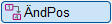
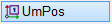

 ")
Die Positionsnummern werden bei normaler Planbearbeitung nicht so sortiert, wie es letztendlich sinnvoll ist. Mit dieser Methode steht Ihnen eine Funktion zur Verfügung, in der die Positionsnummern einzeln oder bereichsweise umsortiert werden können.
|
Hinweis: |
|
Das Umsortieren der Positionsnummern über das Aufziehen eines Rahmens ist derzeit nicht möglich. |

§Geben Sie einen neuen Startwert ein und bestätigen Sie mit der Eingabetaste. Mit Rechtsklick können Sie den Startwert übernehmen. [Neuer Zählbeginn].
§Entscheiden Sie, ob Lücken in der Nummerierung entfernt werden sollen oder nicht. Siehe Erklärung in Alle Positionen neu durchzählen.
[0 = nein]; Leerpositionen bleiben erhalten.
[1 = ja]; Leerpositionen werden entfernt.
§Klicken Sie entweder ja oder nein an und bestätigen Sie mit Rechtsklick. [Leerpositionen entfernen?].
Die Abfrage der Position, die als Startpunkt bestimmt werden soll, wird aktiviert.
Neben der Abfrage [Pos. wählen] wird Ihnen unter [akt. Pos.] die Positionsnummer angezeigt, die Sie in der Abfrage [Neuer Zählbeginn] eingegeben haben. Wie die Positionsnummern nummeriert werden, hängt einerseits davon ab, ob die aktuell zu vergebende Positionsnummer [akt. Pos.] größer oder kleiner ist als die Position, die Sie anklicken und, ob Leerpositionen beibehalten oder entfernt werden.

a)Wenn [akt. Pos.] größer ist als die Positionsnummer, die Sie anklicken: Ab der neuen Position werden alle folgenden Positionsnummern um eins hochgezählt. b)Wenn [akt. Pos.] kleiner ist als die Positionsnummer, die Sie anklicken: Ab der neuen Position werden die Positionsnummern bis zur alten Positionsnummer um eins hochgezählt. Beispiel:
|
|||||||||||||||||||
a)Wenn [akt. Pos.] größer ist als die Positionsnummer, die Sie anklicken: Ab der neuen Position werden die Leerstellen aufgefüllt, bis keine Position mehr hochgezählt werden muss, oder die letzte Position erreicht wurde. b)Wenn [akt. Pos.] kleiner ist als die Positionsnummer, die Sie anklicken: Ab der neuen Position werden die Leerstellen aufgefüllt, bis keine Position mehr hochgezählt werden muss, oder die Ausgangsposition erreicht wurde. Beispiel:
|
|||||||||||||||||||||
§Klicken Sie die Positionsnummern nacheinander in der gewünschten Reihenfolge an. [Pos. wählen].
-[akt. Pos.] wird nach jedem Klick automatisch hochgezählt und zeigt Ihnen die aktuell zu vergebende Positionsnummer an.
-Die Positionsnummer wird aktualisiert. Die Leerpositionen werden, je nachdem, ob Sie "nein" oder "ja" gewählt haben, beibehalten oder entfernt.
-Wenn die Positionsnummer [akt. Pos.] bereits vergeben ist, wird die nachfolgende Nummer entsprechend um eins hochgezählt. Beenden Sie das Umsortieren mit Rechtsklick. Die Abfrage [Neuer Zählbeginn] wird wieder aktiviert.
Siehe auch:
·Alle Positionen neu durchzählen
·Positionen in Reihenfolge bringen
·Lücke in der Positionierung schaffen
Zugehörige Referenzen: